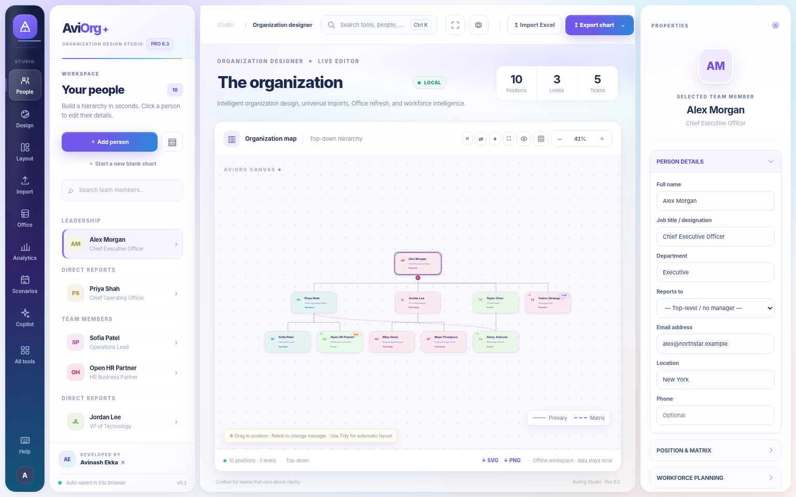

A
AviOrg Studio
Beautifully designed organization charts.
Premium visual editing, 500 chart designs, colorful department cards, Excel imports, editable PowerPoint exports and workforce analytics — in one offline-capable studio.
Launch AviOrg StudioView features & guide
